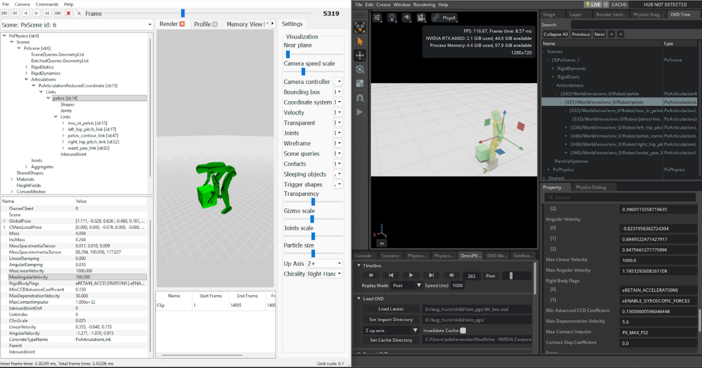

比较 Isaac Gym 和 Isaac Lab 之间的仿真#
当从 Isaac Gym 迁移仿真到 Isaac Lab 时，有时需要比较 Isaac Gym 和 Isaac Lab 中的仿真配置以识别两个设置之间的差异。默认值的解释方式、导入器对某些刚体层次结构的处理方式以及值的缩放方式可能存在差异。确保两个仿真在 PhysX 看来是等效的唯一方法是记录两个设置的仿真轨迹，并通过并排检查来比较它们。这种方法之所以有效，是因为 PhysX 是 Isaac Gym 和 Isaac Lab 的共同底层引擎，尽管版本不同。
在 Isaac Gym Preview Release 中录制为 PXD2 格式#
可以使用内置的 PhysX Visual Debugger (PVD) 文件输出功能在 Isaac Gym 中记录仿真轨迹。将操作系统环境变量 GYM_PVD_FILE 设置为所需的输出文件路径； .pxd2 文件扩展名将自动添加。
有关详细说明，请参阅 Isaac Gym 附带的调优文档：
isaacgym/docs/_sources/programming/tuning.rst.txt
备注
提供此文件引用是因为 Isaac Gym 没有在线文档。
在 Isaac Lab 中录制为 OVD 格式#
要在 Isaac Lab 中记录 OVD 仿真轨迹文件，必须设置适当的 Isaac Sim Kit 参数。重要的是要在将 omniPvdOutputEnabled 设置为 true 之前 设置 omniPvdOvdRecordingDirectory 变量。
./isaaclab.sh -p scripts/benchmarks/benchmark_non_rl.py --task <task_name> \
--kit_args="--/persistent/physics/omniPvdOvdRecordingDirectory=/tmp/myovds/ \
--/physics/omniPvdOutputEnabled=true"
此示例将一系列 OVD 文件输出到 /tmp/myovds/ 目录。
如果 --kit_args 参数在您的特定设置中不起作用，您可以通过直接编辑 Isaac Sim 源代码中的以下文件来手动设置 Kit 参数：
source/extensions/isaacsim.simulation_app/isaacsim/simulation_app/simulation_app.py
在 args = [] 块后添加以下行：
args.append("--/persistent/physics/omniPvdOvdRecordingDirectory=/path/to/output/ovds/")
args.append("--/physics/omniPvdOutputEnabled=true")
检查 PXD2 和 OVD 文件#
通过在 PVD 查看器中打开 PXD2 文件并在 OmniPVD（一个 Kit 扩展）中打开 OVD 文件，您可以手动比较两次仿真运行及其各自的参数。
PhysX Visual Debugger (PVD) 用于 PXD2 文件
从 NVIDIA 开发者工具页面下载 PVD 查看器：
PVD 查看器的版本 2 和版本 3 都与 PXD2 文件兼容。
OmniPVD 用于 OVD 文件
要查看 OVD 文件，请在 Isaac Sim 应用程序中启用 OmniPVD 扩展。有关详细说明，请参阅 OmniPVD 开发者指南：
在 OmniPVD 中检查接触点小部件
要检查对象之间的接触点，请在 OmniPVD 中启用接触点小部件。确保在 OmniPVD 时间轴中将仿真帧设置为 PRE**（每个仿真步骤的预仿真帧），或将重放模式设置为 **PRE 。这样可以在求解器处理每个步骤之前可视化接触信息。
比较 PVD 和 OVD 文件
使用 PVD 查看器和 OmniPVD 扩展，您现在可以并排比较仿真以识别配置差异。左侧是用于检查 PXD2 的 PVD，右侧是加载用于检查 OVD 文件的 OmniPVD 扩展。

仿真比较期间需要验证的参数#
对于 PhysX 铰接体，每个属性都值得检查，因为它揭示了链节或形状在接触、驱动和约束下的实际行为方式。下面详细说明了每个属性及其对调试和调优仿真的重要性。
PxArticulationLink（铰接链节）#
每个链节的行为类似于具有质量属性、阻尼、速度限制和接触解析限制的刚体。检查这些有助于解释稳定性问题、抖动和对力的异常响应。
质量属性#
- 质量
决定链节在力作用下的加速强度，以及它在碰撞和关节约束中如何分担冲量。
何时检查: 理解为什么链节看起来 "过重" （被推动时几乎不动）或 "过轻" （因小冲量而到处飞），以及检测链条上不一致的质量分布，这可能导致不真实的运动或关节应力。
- 质心（位姿）
控制力的有效作用位置以及链节如何平衡。
何时检查: 角色或机构意外倾翻或感觉不平衡；偏移的质心会导致相同接触产生不真实的扭矩。
- 惯性张量 / 惯性缩放
定义关于每个轴的旋转阻力。
何时检查: 相对于其质量，链节旋转过于容易或困难，这会影响关节驱动调整和冲击响应。
阻尼属性#
- 线性阻尼
模拟与速度成正比的平移阻力；较高的值使链节更快地失去线性速度。
何时检查: 链节滑动过远（阻尼过低）或感觉 "在水下" （阻尼过高），或者当铰接体能量似乎在没有明显接触的情况下消失时。
- 角阻尼
模拟旋转阻力；较高的值使旋转链节更快地减速。
何时检查: 链节在冲击或电机驱动后继续旋转（过低），或者关节感觉 "粘滞" 且无法在重力下自由摆动（过高）。
速度属性#
- 线速度
链节在世界空间中的瞬时平移速度。
何时检查: 验证关节电机、重力或接触是否产生预期运动，检测数值爆炸（巨大峰值），并与CCD阈值和最大线速度钳位关联。
- 角速度
世界空间中的瞬时旋转速度。
何时检查: 验证关节驱动、冲击或约束是否产生正确的旋转；发现失控旋转，这可能在钳位生效之前导致不稳定或穿透。
- 最大线速度
PhysX在求解前用于钳制线速度的上限，旨在防止极快运动带来的数值问题。
何时检查: 对象开始穿透或仿真在高速时爆炸。如果过高，链节在一步中可能移动过远；过低，它们可能看起来被不自然地限制，像 "限速" 机器人。
- 最大角速度
角速度的上限；PhysX 以与线速度类似的方式钳制角速度。
何时检查: 链节在碰撞或驱动后旋转速度不切实际地快（值过大），或者旋转看起来被不自然地限制，特别是对于应该快速旋转的轮子或转子（值过小）。
接触解析属性#
- 最大去穿透速度
限制求解器在一步中可以添加多少校正速度来解决接触处的穿透。
何时检查: 重叠的链节在开始穿透后向外 "爆炸" 或抖动（过高），或嵌入的链节分离过慢并看起来粘在一起（过低）。
- 最大接触冲量
限制求解器在接触处可以施加的冲量；每个刚体的限制，实际接触限制是两个刚体值中的最小值。
何时检查: 接触感觉太软（刚体深度穿透或沉入环境）或太硬（尖锐冲量导致震铃或反弹），或者在调整 "软碰撞" （如橡胶或类皮肤表面）时。
状态和行为标志#
- 运动学 vs 动力学标志 / 禁用重力
指示链节是运动学驱动还是完全仿真，以及重力是否影响它。
何时检查: 部件看起来被冻结，直接跳转到位姿，或忽略重力，这可能会大幅改变铰接体行为。
- 休眠阈值（线性、角度）和唤醒计数器
控制链节何时允许进入休眠并停止仿真。
何时检查: 铰接体过早休眠（停止运动）或从不休眠（浪费性能并导致低幅度抖动）。
PxArticulationJoint（铰接关节）#
入站关节定义链节与其父节点之间的相对运动。检查运动和相关参数可以解释限制、约束以及驱动如何塑造铰接体位姿和稳定性。
关节配置#
- 运动
每轴设置（锁定、限制、自由），定义关节允许哪些自由度以及范围是否受限。
何时检查: 链节沿意外方向移动（轴错误地设置为自由），比预期更早或更晚碰到硬停止（限制 vs 锁定），或者由于轴错误地保持自由而看起来不受约束。
- 关节类型 / 轴定义
选择旋转、棱柱、球形等类型，以及定义轴的局部关节框架。
何时检查: "铰链" 表现得更像球关节或意外滑动；不正确的类型或框架对齐很容易产生怪异的运动。
- 限制（摆动、扭转、线性）
指定允许的角度或线性范围，通常包括刚度/阻尼。
何时检查: 关节过度伸展，穿过几何体，或在边界处突然咬合；设置错误的限制会导致弹跳和不稳定。
驱动属性#
- 驱动目标位置（方向）和目标速度
驱动铰接体的期望相对位姿和相对速度，通常使用弹簧-阻尼器模型。
何时检查: 控制器太慢或过冲并振荡——目标值和驱动参数必须与链节质量和惯性匹配。
- 驱动刚度和阻尼（弹簧强度、切向阻尼）
控制关节尝试达到目标位姿的激进程度以及过冲的阻尼量。
何时检查: 关节在负载下嗡嗡作响或振荡（刚度高、阻尼低）或感觉无响应且 "橡胶般" （刚度低）。
- 关节摩擦 / 阻力（如果配置）
即使在驱动中没有显式阻尼，也会增加阻力。
何时检查: 被动关节继续摆动时间过长，或者即使没有驱动也看起来被卡住。
PxShape（形状）#
附加到链节的形状决定了碰撞表示和接触行为。即使它们在 OmniPhysics 中是内部的，它们的属性也对稳定性、接触时间和视觉对齐有很强的影响。
碰撞偏移#
- 静止偏移
两个形状静止时的距离；它们的静止偏移之和定义了它们 "安定" 的分离距离。
何时检查: 图形和碰撞看起来不对齐（间隙或可见相交），或在网格上滑动粗糙。小的正偏移可以使滑动平滑，而零偏移倾向于精确对齐，但可能会卡在几何体上。
- 接触偏移
接触生成开始的距离；距离小于接触偏移之和的形状会生成接触。
何时检查: 接触看起来 "过早" （对象在视觉接触前似乎发生碰撞，增加接触计数）或 "过晚" （穿透或抖动）。接触偏移和静止偏移之间的差异对于预测性、稳定的接触至关重要。
几何和材质#
- 几何类型和尺寸
盒子、球体、胶囊、凸面、网格以及相关的尺寸参数。
何时检查: 碰撞轮廓与视觉网格不匹配——过大的形状会导致过早接触；小形状允许视觉相交并改变接触处的杠杆作用。
- 材质：摩擦、恢复、柔度
摩擦系数和恢复系数定义滑动和弹性。
何时检查: 铰接体的脚太容易打滑、粘在地面上或意外反弹。错误的材质会使机构不稳定或无响应。
形状标志#
- 仿真 / 查询 / 触发标志
形状是否参与仿真接触、仅光线投射或触发事件。
何时检查: 接触未出现（形状设置为仅查询）或触发器意外创建物理碰撞。
- 接触密度（CCD 标志，如果使用）
影响快速移动链节处理方式的连续碰撞检测标志。
何时检查: 快速铰接部件穿过薄障碍物，或 CCD 过于激进并降低性能。
PxRigidDynamic（刚体动力学）#
PxRigidDynamic 是 PhysX 中的核心仿真刚体类型，因此检查其属性对于理解场景中单个对象的行为、稳定性和性能至关重要。许多属性与 PxArticulationLink 相似，但刚体动力学不受铰接关节约束，也可以在运动学模式下使用。
阻尼和速度限制#
- 线性阻尼
在平移上添加与速度成正比的阻力。
何时检查: 刚体滑动过远或过长时间（阻尼过低）或看起来像在浓稠液体中移动（阻尼过高），以及当场景比仅靠摩擦所暗示的更快地失去能量时。
- 角阻尼
增加旋转阻力，随时间降低角速度。
何时检查: 旋转物体从不稳定或旋转时间不切实际地长（过低），或者它们在冲击或电机冲量后几乎立即停止旋转（过高）。
- 线速度
积分器和求解器使用的当前平移速度。
何时检查: 调试冲量、重力或施加的力，以查看刚体是否按预期加速；检测速度中的尖峰或非物理跳跃。
- 角速度
围绕每个轴的当前旋转速度。
何时检查: 旋转看起来抖动、数值爆炸或未能响应施加的扭矩。相对于时间步长和对象比例的高值可能表示不稳定。
- 最大线速度
求解前用于钳制线速度的上限。
何时检查: 非常快的刚体导致穿透或仿真爆炸（值过高），或者它们看起来被不自然地 "限速" ，特别是高能场景中的抛射物或碎片（值过低）。
- 最大角速度
用于钳制角速度的上限。
何时检查: 薄或小的刚体旋转如此之快以至于它们破坏场景的稳定性（值过高），或者旋转元素如轮子、螺旋桨或碎片看起来被人为限制（值过低）。
接触解析和冲量#
- 最大去穿透速度
限制求解器在一步中可能引入的校正速度以解决互穿。
何时检查: 相交的刚体在重叠后 "爆炸" 分开或剧烈抖动（过高），或者非常缓慢地分离并在几帧中看起来卡住或互穿（过低）。
- 最大接触冲量
限制涉及此刚体的接触处可以施加的冲量；有效限制是两个刚体之间的最小值，或静态-动态接触中的动态刚体。
何时检查: 创建更软的接触（较低限制）或非常刚性、几乎不屈服的刚体（高或默认限制）；对象相互沉入或不切实际地反弹。
休眠和激活行为#
- 休眠阈值
质量归一化的动能低于此值时，刚体成为休眠候选。
何时检查: 刚体在应该继续移动时过早休眠（阈值过高）或持续抖动且从不休眠（阈值过低），这可能会损害性能。
- 唤醒计数器 / isSleeping 标志
指示刚体是否活动的内部计时器和状态。
何时检查: 刚体在交互时拒绝唤醒或过于容易唤醒。不良的休眠行为会使场景感觉 "死气沉沉" 或过于嘈杂。
运动学模式和锁定#
- 运动学标志 (PxRigidBodyFlag::eKINEMATIC)
设置后，刚体通过
setKinematicTarget移动并忽略力和重力，同时仍然影响其接触的动态刚体。何时检查: 对象似乎具有无限质量（推动其他对象但不做出反应）或忽略重力和冲量。这里的不匹配预期通常会导致角色、移动平台或门的奇怪行为。
- 刚体动力学锁定标志 (PxRigidDynamicLockFlag)
每轴线性和角度自由度锁定，有效地在没有关节的情况下约束运动。
何时检查: 刚体意外地在受约束方向上移动（未设置锁定）或在应该移动/旋转的地方无法移动（错误设置锁定），特别是对于 2D 风格的移动或简单的受约束机构。
- 禁用重力 (PxActorFlag::eDISABLE_GRAVITY)
切换刚体是否受场景重力影响。
何时检查: 对象漂浮在半空中或意外掉落。在某些无重力刚体的混合设置中，这是常见的困惑来源。
力和求解器覆盖#
- 施加的力和扭矩（每步累积）
将被积分到速度中的净力/扭矩。
何时检查: 调试游戏力（推进器、角色推动、爆炸）以查看预期输入是否实际到达刚体。
- 每刚体求解器迭代计数 (minPositionIters, minVelocityIters)
此刚体在约束和接触中获得多少求解器迭代的覆盖。
何时检查: 某些刚体（例如，角色、堆叠的箱子、脆弱的结构）需要更高的稳定性或更准确的堆叠。低迭代可能导致抖动和穿透；过高会浪费性能。
总结：检查什么以及为什么#
下表总结了每个 PhysX 组件的关键检查区域：
组件 |
关键属性 |
调试重点 |
|---|---|---|
链节 |
质量、阻尼、速度、限制 |
整体能量、稳定性以及对关节/接触的响应 |
关节 |
运动、限制、驱动 |
铰接体位姿如何演变；过度/不足约束的运动 |
形状 |
偏移、材质、几何 |
接触时间、摩擦行为、视觉与物理对齐 |
刚体动力学 |
质量、惯性、阻尼、速度限制、休眠、运动学标志 |
加速度、沉降、极端运动、刚体状态 |
所有这些属性共同提供了为什么铰接体或刚体如此行为的全面图景，以及在哪里调整参数以实现稳定性、真实性或控制性能。